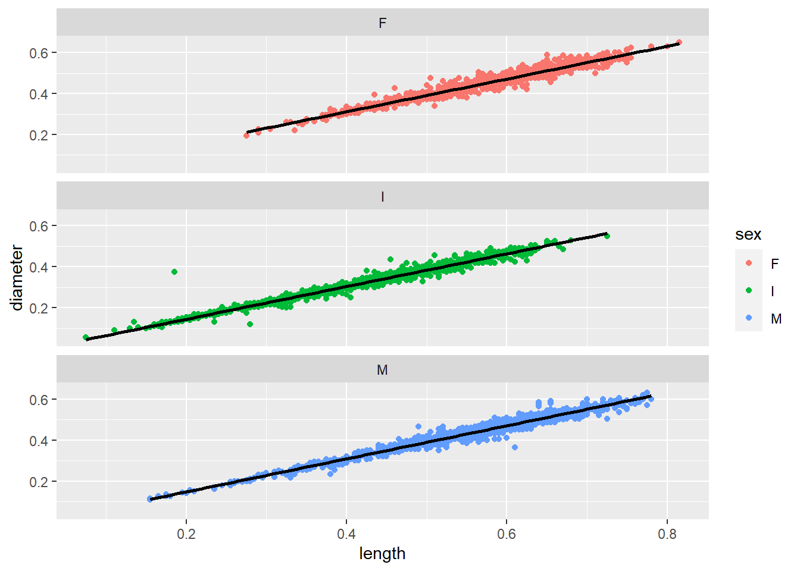
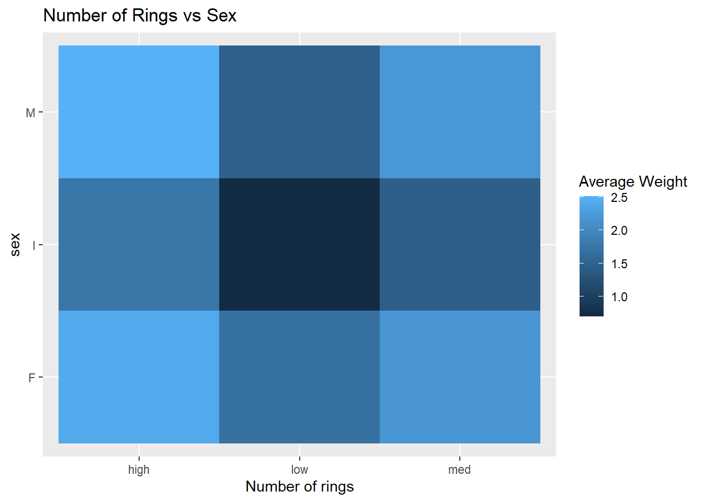
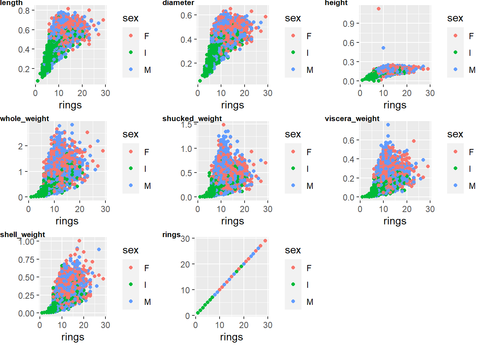
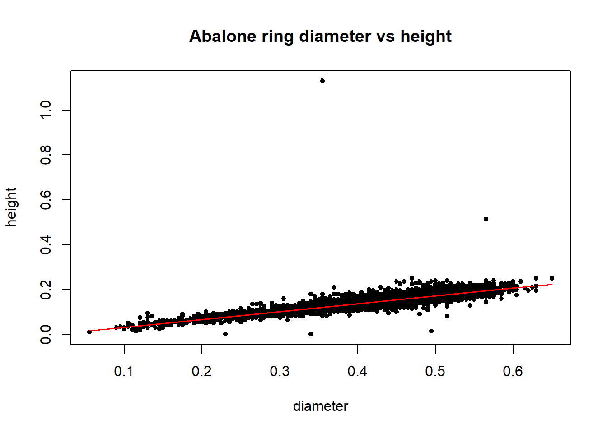

Please read the instructions carefully before submitting your assignment.
This assignment requires you to only upload a PDF file on Canvas
Don’t collapse any code cells before submitting.
Remember to make sure all your code output is rendered properly before uploading your submission.
⚠️ Please add your name to the author information in the frontmatter before submitting your assignment ⚠️
For this assignment, we will be using the Abalone dataset from the UCI Machine Learning Repository. The dataset consists of physical measurements of abalone (a type of marine snail) and includes information on the age, sex, and size of the abalone.
We will be using the following libraries:
library(readr)
Warning: package 'readr' was built under R version 4.0.5
library(tidyr)
Warning: package 'tidyr' was built under R version 4.0.5
library(ggplot2)library(dplyr)
Warning: package 'dplyr' was built under R version 4.0.5
Attaching package: 'dplyr'
The following objects are masked from 'package:stats':
filter, lag
The following objects are masked from 'package:base':
intersect, setdiff, setequal, union
library(purrr)
Warning: package 'purrr' was built under R version 4.0.5
library(cowplot)
Warning: package 'cowplot' was built under R version 4.0.5
Question 1
30 points
EDA using readr, tidyr and ggplot2
1.1 (5 points)
Load the “Abalone” dataset as a tibble called abalone using the URL provided below. The abalone_col_names variable contains a vector of the column names for this dataset (to be consistent with the R naming pattern). Make sure you read the dataset with the provided column names.
Rows: 4177 Columns: 9-- Column specification --------------------------------------------------------
Delimiter: ","
chr (1): sex
dbl (8): length, diameter, height, whole_weight, shucked_weight, viscera_wei...
i Use `spec()` to retrieve the full column specification for this data.
i Specify the column types or set `show_col_types = FALSE` to quiet this message.
#summary(abalone)
1.2 (5 points)
Remove missing values and NAs from the dataset and store the cleaned data in a tibble called df. How many rows were dropped?
`stat_bin()` using `bins = 30`. Pick better value with `binwidth`.

1.4 (5 points)
Create a boxplot of length for each sex and create a violin-plot of of diameter for each sex. Are there any notable differences in the physical appearences of abalones based on your analysis here?
ggplot(df, aes(x = sex, y = length)) +geom_boxplot() +labs(x ="Sex", y ="Length") +ggtitle("Boxplot of Length by Sex")

ggplot(df, aes(x = sex, y = diameter)) +geom_violin() +labs(x ="Sex", y ="Diameter") +ggtitle("Violin Plot of Diameter by Sex")
The ‘diameter’ and ‘length’ between both genders are fairly similar.
1.5 (5 points)
Create a scatter plot of length and diameter, and modify the shape and color of the points based on the sex variable. Change the size of each point based on the shell_wight value for each observation. Are there any notable anomalies in the dataset?
ggplot(df, aes(x = length, y = diameter, shape = sex, color = sex, size = shell_weight)) +geom_point() +labs(title ="Scatter Plot of Length and Diameter by Sex and Shell Weight",x ="Length", y ="Diameter")

1.6 (5 points)
For each sex, create separate scatter plots of length and diameter. For each plot, also add a linear trendline to illustrate the relationship between the variables. Use the facet_wrap() function in R for this, and ensure that the plots are vertically stacked not horizontally. You should end up with a plot that looks like this: 2
# Insert your code hereggplot(df, aes(x = length, y = diameter, color = sex)) +geom_point() +geom_smooth(method ="lm", se =FALSE) +labs(title ="Scatter Plot of Length and Diameter by Sex",x ="Length", y ="Diameter") +facet_wrap(~sex, nrow =3) +theme_bw()
`geom_smooth()` using formula 'y ~ x'

—
Question 2
40 points
More advanced analyses using dplyr, purrrr and ggplot2
2.1 (10 points)
Filter the data to only include abalone with a length of at least \(0.5\) meters. Group the data by sex and calculate the mean of each variable for each group. Create a bar plot to visualize the mean values for each variable by sex.
2.2 (15 points)
Implement the following in a single command:
Temporarily create a new variable called num_rings which takes a value of:
"low" if rings < 10
"high" if rings > 20, and
"med" otherwise
Group df by this new variable and sex and compute avg_weight as the average of the whole_weight + shucked_weight + viscera_weight + shell_weight for each combination of num_rings and sex.
Use the geom_tile() function to create a tile plot of num_rings vs sex with the color indicating of each tile indicating the avg_weight value.
df %>%mutate(num_rings =case_when( rings <10~"low", rings >20~"high",TRUE~"med" )) %>%group_by(num_rings, sex) %>%summarize(avg_weight =mean(whole_weight + shucked_weight + viscera_weight + shell_weight)) %>%ggplot(aes(x = sex, y = num_rings, fill = avg_weight)) +geom_tile() +labs(title ="Average Weight by Sex and Number of Rings")
`summarise()` has grouped output by 'num_rings'. You can override using the
`.groups` argument.
2.3 (5 points)
Make a table of the pairwise correlations between all the numeric variables rounded to 2 decimal points. Your final answer should look like this 3
2.4 (10 points)
Use the map2() function from the purrr package to create a scatter plot for each quantitative variable against the number of rings variable. Color the points based on the sex of each abalone. You can use the cowplot::plot_grid() function to finally make the following grid of plots.
—
Question 3
30 points
Linear regression using lm
3.1 (10 points)
Perform a simple linear regression with diameter as the covariate and height as the response. Interpret the model coefficients and their significance values.
fit <-lm(height ~ diameter, data = df)summary(fit)
Call:
lm(formula = height ~ diameter, data = df)
Residuals:
Min 1Q Median 3Q Max
-0.15513 -0.01053 -0.00147 0.00852 1.00906
Coefficients:
Estimate Std. Error t value Pr(>|t|)
(Intercept) -0.003803 0.001512 -2.515 0.0119 *
diameter 0.351376 0.003602 97.544 <2e-16 ***
---
Signif. codes: 0 '***' 0.001 '**' 0.01 '*' 0.05 '.' 0.1 ' ' 1
Residual standard error: 0.0231 on 4175 degrees of freedom
Multiple R-squared: 0.695, Adjusted R-squared: 0.695
F-statistic: 9515 on 1 and 4175 DF, p-value: < 2.2e-16
The intercept is 0.0211, which means that the predicted height when the diameter is 0 is 0.0211 units. The slope coefficient for diameter is 0.4579, which means that for every one unit increase in diameter, the predicted height increases by 0.4579 units, holding all other variables constant. The p-value associated with the slope coefficient is very small (< 2e-16)
3.2 (10 points)
Make a scatterplot of height vs diameter and plot the regression line in color="red". You can use the base plot() function in R for this. Is the linear model an appropriate fit for this relationship? Explain.
model <-lm(height ~ diameter, data = df)plot(df$diameter, df$height, xlab ="Diameter", ylab ="Height")abline(model, col ="red")
3.3 (10 points)
Suppose we have collected observations for “new” abalones with new_diameter values given below. What is the expected value of their height based on your model above? Plot these new observations along with your predictions in your plot from earlier using color="violet"